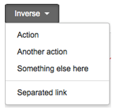

因為dropdown上有圓角, 假設向下支援至ie9+. 如果要再往下支援, 需改寫attachEvent & querySelectorAll & 自行實作Array.prototype.forEach
Please implement the UI as figure below and follow the instruction.
- Please do NOT use any library such as jQuery, Dojo, angularJS, …and so on.
- Please consider the reusability and modularization.
- Please consider the style as figure and try to do your best